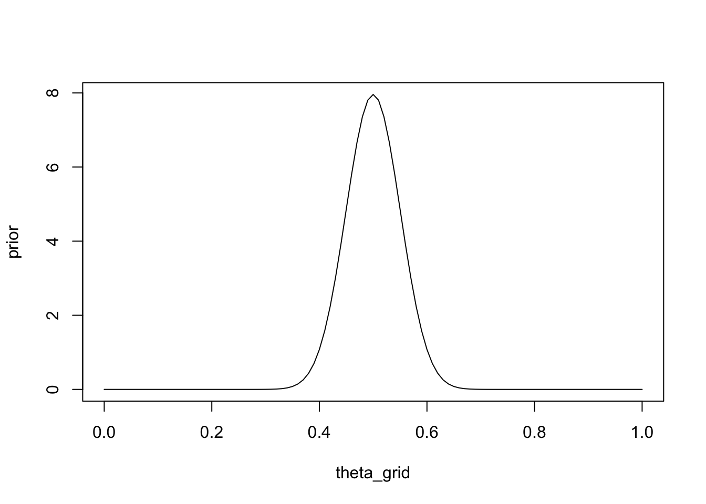
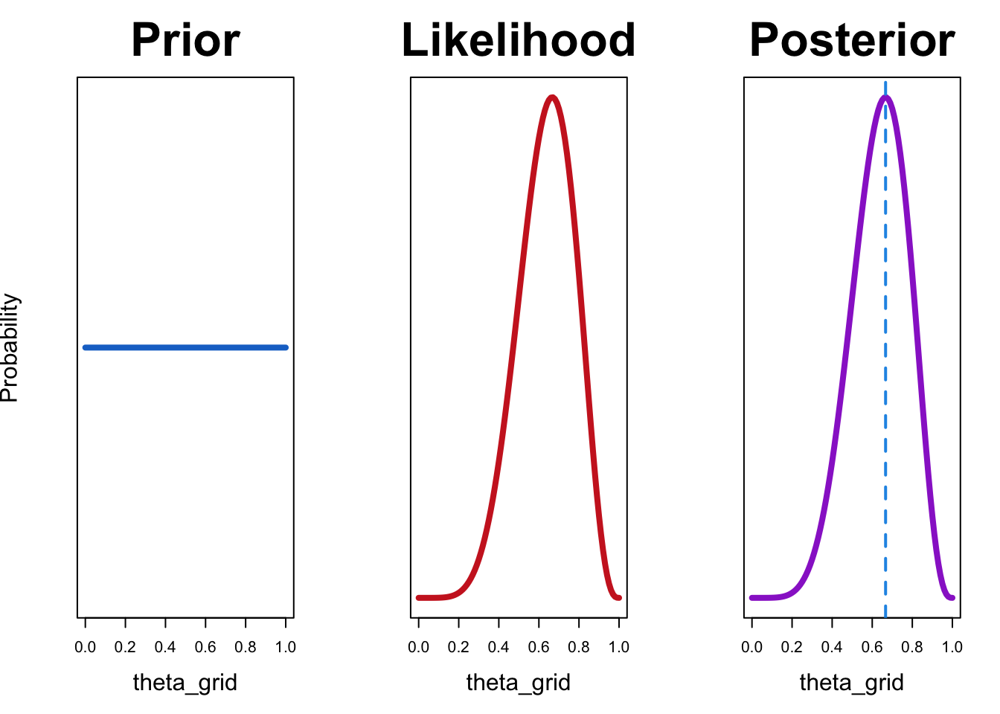

Data analysis: I
Combining informatin from multiple participants | Intro to Bayesian data anlysis.
![]()
Data analysis
In this chapter, we will tackle two important topics:
What methods should we use when modelling and summarizing data from multiple participants, and
Which alternative approaches are available when methods for null hypothesis significance testing (NHST) are not suitable.
The latter is often the case in neuroscience, where low power due to small sample sizes is a well-known problem (Button et al. 2013). The alternative approach we will discuss here is Bayesian data analysis, which also has the benefit is allowing us to provide evidence for or against hypotheses, something which is not possible using NHST.
Modelling and summarizing data from multiple participants
In most neuroscience experiments, we are interested in effects of manipulations at the individual level, but we also need to be sure that theses effects hold at the group level, and are not particular to certain individuals. However, reporting effects at the group level is not straightforward.In short, there are three possiblities when combining informatin from multiple participants:
Complete pooling
We can pretend that all our data come from 1 participant, by averaging over participants. In statistics, this is know as complete pooling, meaning that all data are pooled and we are no longer interested in individual participants. The pooled data are then used to estimate parameters, and to perfom hypothesis testing. While there are cases in which it is possible to analyze averaged data, in general this approach can lead to errors, and needs to be treated with care. A classic example is shown in Figure 1. The thin solid lines represent individual learning curves. Each indivdial appears to learn very rapidly (and linearly), but there is a huge variation in the onset of learning. The filled circles represent a naive attempt at averaging over all individuals. The result suggests that learning is gradual and starts from the outset; however the average learning curve looks nothing like the individual learning curves. This type of analysis can lead to erroneous conclusions.
No pooling
This means that data we estimate parameters of our models for each participant separately. While this appears to be a more sensible approach, there is the danger of over-fitting. This means that we give up the ability to generalize because our models are too sensitive to noise inherent in our data. Estimating parameters at the individual level is usually followed by a group-level statistical analysis. We might estimate the parameters of a signal detection or diffusion decision model for each participant individually, and then perform hypothesis tests on those parameters at the group level. For example, in a within-person design, we estimate individual bias parameters for each person in two conditions, and then perform a t-test at the group level to discover whether there is a difference between conditions. A problem that is associated with this approach is that we have to treat the estimated parameters as “data” at the group level, thus ignoring any uncertainty associated with those parameters; this can lead to over-confidence in our results. Nevertheless, this two-stage analysis is by far the most common approach in neuroscience.
Partial pooling
A principled solution to the problems associated with individual and group level analyses is to use multilevel modelling. This allows us to simultaneously estimate group level parameters (fixed effects) and individual parameters (random effects) as deviations from the group average. This leads to the phenomenon known as shrinkage, which means that individual estimates are “pulled” towards the group average, and are less susceptible to noise in the data. An intuitive way of thinking about this is that we are assuming that participants are all individuals, but they do share some common characteristics, and we can use information obtained from other participants to inform our estimates. This is what partial pooling refers to.
While multilevel models are outside the scope of this course, we will look some basic models in our final session on Baysian data analysis. THe basic idea is that each individual participant’s parameters are treated as random draws from a group-level distribution, and the average effect is then simply the mean of that distribution.
Multilevel models do not have to be Bayesian - the can just as well be estimated using maximum likelihood estimation.
Frequentist statistics
The traditional approach to statistics is know as frequentist statistics. We will first go through the basic principles, then discuss some of the limitations associated with this approach, and then contrast this with the Bayesian approach.
In a traditional approach to statistics, students are usually taught a variety of different approaches (far too many to discuss here - there are enough enough different models to fill entire text books). In a nutshell, most of these approachs perform the following steps (I will use an equal-variance independent samples t-test as a running example, as well as the problem of estimating the probability of sucess parameter in a model of Bernoulli trials):
- A statistical model is assumed. In the case of the t-test all observations within both groups are assumed to be normally distributed, with the groups differing in the means of the distributions (assuming that the standard deviations of both groups are equal to \(\sigma\)).
\[ y_{ij} \sim \mathcal{N}(\mu_j, \sigma^2) \] \(y_{ij}\) refers to the \(i_{th}\) observation in group \(j \in \{1, 2\}\). This observations are assumed to be independent random variates from a normal distribution (i.i.d)1, with the distribution’s mean \(\mu_j\) depending on the group. In a t-test, we are interested in the difference between the group means, \(\mu_2 - \mu_1\).
1 independent and identically distributed
The group means are estimated. This can be done, e.g. using maximum likelihood estimation. You will be more familiar with the technique of “simply” using the sample means to estimate \(\mu_j\), which actually corresponds to the maximum likelihood estimate. The third parameter that has to be estimated is \(\sigma\). This is the parameter estimation step. \(\sigma\) can be estimated using maximum likelihood, or simply “calculated” as the pooled standard deviation \(s_p\). In either case, the parameter is estimated.
A test statistic is calculated. In this case, the difference \(\mu_1 - \mu_2\) is of interest, and using this difference, a test statistic is computed. The test statistic can be computed as
\[ t = \frac{\bar{x_1} - \bar{x_2}}{s_p \sqrt{2/n}} \]
where \(s_p \sqrt{2/n}\) is the standard error of the difference. \(t\) is assumed to follow a Student-t distribution (under the null hypothesis), and we can compute the probability of observing a test statistic (estimated from the data) that is at least as extreme (depending on the hypothesis) as the observed one (or rather the t value estimated from the actually observed data), under the assumption that the null hypothesis is true. This tail probability is known as a p-value.
What can we discover with NHST?
It is important to think about what exactly this approach can tell us. For instance, can we discover how probable the null hypothesis is? Can we ask how probable it is that the null hypothesis is false, and that therefore the alternative is true?
Unfortunately, the answer to both of these questions is no, we cannot.
This approach cannot tell us anything about probabilities of hypotheses - all that we can discover is how likely the data (as summarized by the parameters) are to have occured under the assumption that the null is true. In this case, how likely is the t value, given that there is no difference between the groups, or mathematically, \(\mu_1 - \mu_2 = 0\). A small p-value can tell us that the data are unlikely, but that is not really the question we are asking.
What we would like to know (intuitively) is how likely are our hypotheses (Wagenmakers 2007). But this is something that frequentist statistics cannot tell us, by design. In the frequentist interpretation, a probability is the relative frequency of occurence of an event. Under this interpretation, a parameter does not have an associated probability distribution, and the question of how probable certain parameter values are is meaningless. In contrast, in Bayesian statistics, a probability is assumed to represent the degree of belief (either subjective or objective) that a certain parameter value is true. As an example, for a frequentist, talking about the probability that it will rain tomorrow is meaningless, because this is not an experiment that can be repeated infinitely many times. For a Bayesian, on the other hand, the probability of rain is merely an expression of belief, a summary of our state of knowledge.
Problems with NHST
Even scientists routinely mistake p-values for probabilities of hypotheses. This is actually one of the most common misconceptions, and lead Wasserstein and Lazar (2016) to write a Statement on Statistical Significance and P-Values in the American Statistical Association. They clarify:
- P-values can indicate how incompatible the data are with a specified statistical model.
- P-values do not measure the probability that the studied hypothesis is true, or the probability that the data were produced by random chance alone.
- Scientific conclusions and business or policy decisions should not be based only on whether a p-value passes a specific threshold.
A further complication is that the commonly used threshold \(p = 0.05\) is completely arbitrary, and based on a combination of ideas by Fisher and Pearson/Neyman. The modern usage actually reflects neither approaches, and is often considered to be a bit of a mess (Amrhein, Greenland, and McShane 2019). Gigerenzer (2004);Gigerenzer (2018) provides an interesting comment on modern usage of hypothesis testing.
Apart from not being particularly intuitive and not allowing us to adress the questions we would like to answer, NHST also has the problem that incentive structures in scientific publishing can often lead to misapplications of NHST procedures. Various questionable research practices are associated with this, including p-hacking. This refers to the practice of performing multiple significance tests, and selecting only those that yield significant results for reporting. In other words - NHST, if used correclty, can be a very useful tool. A big problem is that it os often not used correctly, and this can lead to misleading results.
Case studies
We will briefly explore the frequentist approach to data analysis using two examples:
- an independent samples t-test, and
- the card game from the previous chapter, and
T-test
This example uses simulated data, but is based on an actual study. In the code below, we simulate creativity scores from two groups. One group was instructed to wear a fancy hat, the other, woth no head gear, serves as a control group. We would like to know whether the fancy hat group and the control group differ in their mean creativity.
library(tidyverse)
set.seed(12)
# Number of people wearing fancy hats
N_fancyhats <- 50
# Number of people not wearing fancy hats
N_nofancyhats <- 50
# Population mean of creativity for people wearing fancy hats
mu_fancyhats <- 103
# Population mean of creativity for people wearing no fancy hats
mu_nofancyhats <- 98
# Average population standard deviation of both groups
sigma <- 15
# Generate data
fancyhats = tibble(Creativity = rnorm(N_fancyhats, mu_fancyhats, sigma),
Group = "Fancy Hat")
nofancyhats = tibble(Creativity = rnorm(N_nofancyhats, mu_nofancyhats, sigma),
Group = "No Fancy Hat")
FancyHat <- bind_rows(fancyhats, nofancyhats) |>
mutate(Group = fct_relevel(as.factor(Group), "No Fancy Hat"))We have created a dataframe called FancyHat.
FancyHat# A tibble: 100 × 2
Creativity Group
<dbl> <fct>
1 80.8 Fancy Hat
2 127. Fancy Hat
3 88.6 Fancy Hat
4 89.2 Fancy Hat
5 73.0 Fancy Hat
6 98.9 Fancy Hat
7 98.3 Fancy Hat
8 93.6 Fancy Hat
9 101. Fancy Hat
10 109. Fancy Hat
# … with 90 more rowsWe can now pretend that we don’t know how the data were generated, and treat them as data from an experiment.
FancyHat |>
ggplot() +
geom_boxplot(aes(y = Creativity, x = Group)) +
labs(title= "Box Plot of Creativity Values") +
theme_bw()Assuming that both groups are normally distributed with the same variance, we can use the t-test to determine whether the mean of the two groups is different.
fancyhat_ttest <- t.test(Creativity ~ Group,
var.equal = TRUE,
data = FancyHat)fancyhat_ttest_tab <- broom::tidy(fancyhat_ttest)fancyhat_ttest_tab |>
select(estimate, estimate1, estimate2, statistic, p.value, conf.low, conf.high) |>
round(3)# A tibble: 1 × 7
estimate estimate1 estimate2 statistic p.value conf.low conf.high
<dbl> <dbl> <dbl> <dbl> <dbl> <dbl> <dbl>
1 -1.65 99.2 101. -0.637 0.526 -6.78 3.49It might not be obvious at first glance what we have done here:
- We assumed that the data are conditionally normally distributed, given the means, with the same variance.
\[ y_{ij} \sim \mathcal{N}(\mu_j, \sigma^2) \]
we estimated three parameters: \(\mu_1\), \(\mu_2\) 2, and \(\sigma\).
We computed the difference between groups as \(\mu_1 - \mu_2\). This gives us an estimate of the difference between the means 3.
We compute a test statistic (empirical t value)4.
We computed the probability of observing the observed difference divided by the standard error, under the null hypothesis that the means are the same (\(\mu_1 = \mu_2\))5. This is a two-sided test, i.e. we have no hypothesis as to which group has the larger mean.
2 estimate1 und estimate2
3 estimate
4 statistic
5 p.value
What does the p-value tell us? Does it tell you what you want to know? Do you know what the confidence interval tells you 6?
6 conf.low and conf.high
The p-value is 0.53 This is larger that the conventional threshold \(\alpha=0.05\). What does this mean?
Card game
Two players are playing a game of cards. You observe that they play 9 games, and that player A wins 6 of those. Now you would like to estimate the probability that player A will win the next game. Another way of putting it that you would to estimate the ability of player A to beat player B at this particular game.
You know that the probability of success must lie in the range \([0, 1]\). What you might not be aware of is that you are assuming a certain probability model, and the probability of success is a parameter of that model. Let’s take a closer look:
We know that the number of \(k\) successes in \(n\) games follows a binomial distribution with parameters \(n\) and \(\theta\). To make things simpler, we also know that each individual game is independent of the others, and the probability of success \(\theta\) is the same for each game. Each success therefore follows a Bernoulli distribution with parameter \(\theta\).
\[ y_i \sim \mathcal{Bernoulli}(\theta) \]
I will generally use the notation \(y\) for a variable that is observed, i.e. the data.
\(y_i\) is the \(i\) th observation in the data, meaning that it tells us whether player A won the game or not on trial \(i\). \(\theta\) is the probability of success for each individual game; this is a parameter of our model (\(\mathcal{M}\)).
Previously, we used maximum likelihood to estimate \(\theta\) - we will repeat this briefly here.
wins <- 6
games <- 9The goal is to figure out the “best” value of \(\theta\), i.e. the value that maximizes the likelihood of observing the data. To do this, we need to consider a range of possible values of \(\theta\) (we already know that this range is \([0, 1]\), so that part is easy). We will consider 100 values of \(\theta\) between 0 and 1, and compute the likelihood of observing the data for each value of \(\theta\).
n_points <- 100
theta_grid <- seq( from=0 , to=1 , length.out = n_points )Assuming that both players have an equal chance of winning, the parameter should be \(\theta = 0.5\). The probability of the data given \(\theta = 0.5\) is:
dbinom(x = wins, size = games, prob = 0.5)[1] 0.1640625The probability of winning 6 out of 9 games, given that both players are equally likely to win, is 0.1640625.
We can also compute the probability of A winning 6, 7, 8 or 9 games, using the cumulative distribution function of the binomial distribution.
1 - pbinom(q = 5, size = games, prob = 0.5)[1] 0.2539063or
pbinom(q = 5, size = games, prob = 0.5, lower.tail = FALSE)[1] 0.2539063pbinom() gives us the lower tail probability, which is the probability that the number of successes is less than or equal to the given value, by default.
Does this seem familiar?
If we want to quantify our null hypothsis that both players are equally likely to win, we would assume that \(\theta=0.5\). Computing the probability of the data under the null is exactly what we have just done. We then plug in the actual data, i.e. 6 out of 9, and the upper tail probability is the p-value. In this case, the p-value is approximately \(0.25\). Using cut-off of 0.05, we would not reject the null hypothesis, and conclude that there is not enough evidence that player A is better than player B (this is a one-sided test).
Now we compute the probability of the data under all parameter values under consideration. In R, this is very simple, since all functions are vectorized.
likelihood <- dbinom(wins , size = games , prob = theta_grid)plot(likelihood)We can see in the above figure that the probability of observing the data is small for a lot of values of \(\theta\). The probability of observing the data, or the likelihood, is maximal for the value 0.6666667:
theta_grid[which.max(likelihood)][1] 0.6666667What we have done so far highlights the distinction between parameter estimation and hypothesis testing. Computing the tail probability under the null (\(\theta=0.5\)) is a hypothesis test, and estimating \(\theta\) is parameter estimation.
An introduction to Bayesian inference
So far, we haven’t considered any prior knowledge we might have had about which parameters are the most likely a priori. In fact, as we will see a bit further down, we have implicitly assumed that all parameters are equally likely. We will now introduce a new concept: a prior distribution for the parameter(s) we are trying to estimate7.
7 In frequentist statistics, the concept is meaningless - parameters cannot have distribution. In Bayesian statistics, a prior distribution should reflect everything we know about the parameter, before we consider the data. The prior reflects our belief, which can be subjective, or objective.
We will then use that prior belief in order to obtain a posterior belief over the possible parameter values. To do this, we need to multiply the prior probability of each parameter value by the likelihood of the data, i.e. by the probability of observing the data given that parameter value. This is an application of Bayes theorem:
\[ p(\theta|y) = \frac{ p(y|\theta) * p(\theta) } {p(y)} \]
This states that the posterior probability of \(\theta\) given the observed data \(y\) is equal to the probability of the data, multiplied by how probable each value of \(\theta\) is a priori. You can think of it like this: each parameter value is weighted according to how well it predicts the data. The product \(p(y|\theta) * p(\theta)\) is then divided by the probability of the data, which in this case is summed over all possible parameter values. This step serves to normalize the posterior, so that it sums to \(1\). This essentially turns the unnormalized posterior into a proper probability distribution.
\[ p(y) = \sum_{\theta}p(y|\theta) * p(\theta) \]
When we are interested in estimating the parameters of a given model, we can often neglect the (constant for a model) normalizing term \(p(y)\). This term, often called the evidence, reflects the prbability of the data, averaged over all parameter values. Written without the normalizing constant, Bayes rule is often written as:
\[ p(\theta|y) \propto p(y|\theta) * p(\theta) \]
Recap
Bayesian inference, in a nutshell, consists of:
Represent your prior belief by a probability distribution over the possible parameter values. This is a principled way of dealing with uncertainty.
Use the likelihood to weight the prior belief.
Obtain a posterior belief over the possible parameter values.
The term belief is used synonymously with probability distribution.
Bayesian inference in the card game: a numerical example
Recall that we defined a sequence of 100 points between 0 and 1, which represented the possible \(\theta\) values.
n_points <- 100
theta_grid <- seq( from=0 , to=1 , length.out = n_points )For each of these, we computed the likelihood, that is the probability of observing the (fixed) data, given the parameter. Now, we can make our knowledge about the probability of each parameter value explicit. At first, we will assume that all parameters are equally likely. We will assign the probability of 1 to each parameter value. This is our prior distribution.
plot(theta_grid, prior_1, "type" = "l")
We could also express the belief that player is at least as good as player B, i.e. they are equally good or A is better than B. One way of doing this is to assign a probability of \(1\) to parameter values greater than or equal to \(0.5\), and the value \(0\) to parameter values less than \(0.5\).
prior_2 <- ifelse(theta_grid < 0.5, 0, 1)plot(theta_grid, prior_2, type = "l")
A more systematic way of doing this is to use a parameterized probability distribution that expresses our beliefs about the parameter.
A family of probability distributions that are suitable for parameters that lie in the interval \([0,1]\) is the Beta distribution. This distribution has \(2\) parameters \(\alpha\) und \(\beta\), which can be interpreted as the prior number of successes and the number of failures, respectively. The number of trials is therefore \(\alpha + \beta\). (ref?)(fig:betadists) shows a number of possible Beta distributions for various settings of \(\alpha\) and \(\beta\).
d |>
ggplot(aes(x = x, group = group)) +
geom_line(aes(y = dbeta(x, shape1 = shape1, shape2 = shape2)),
color = "steelblue4", size = 1.1) +
scale_x_continuous(expression(theta), breaks = c(0, .5, 1)) +
coord_cartesian(ylim = c(0, 3)) +
labs(title = "Beta distributions",
y = expression(p(theta*"|"*a*", "*b))) +
theme(panel.grid = element_blank()) +
facet_grid(b~a)
If we want to use a Beta distribution to express the belief that all values of \(\theta\) are equally likely (uniform prior), we can a Beta distribution with \(\alpha = 1\) and \(\beta = 1\).
prior_3 <- dbeta(x = theta_grid, shape1 = 1, shape2 = 1)plot(theta_grid, prior_3, type = "l")Finally, we could express the following prior information as a Beta distribution: imagine you had previously observed \(100\) games between A and B, and each won half of the games. You can set \(\alpha\) and \(\beta\) to the number of games won by A, and the number of games won by B, respectively. A won \(50\), and B won \(50\):
prior <- dbeta(x = theta_grid, shape1 = 50, shape2 = 50)plot(theta_grid, prior, type = "l")
Now, we can combine the prior and the likelihood by multiplying them element-wise, i.e. we need to multiply each parameter value with the probability of the data given that parameter.
Recall Bayes theorem:
\[ p(\theta|y) = \frac{ p(y|\theta) * p(\theta) } {p(y)} \]
In R, this is simply:
wins <- 6
games <- 9unstandardized_posterior <- likelihood * priorThis gives us the unnormalized posterior:
\[ p(\theta|y) \propto p(y|\theta) * p(\theta) \]
We can then normalize the posterior distribution by dividing it by \(p(y) = \sum_{\theta}p(y|\theta) * p(\theta)\). In R we can use the sum() function: sum(unstandardized_posterior).
posterior <- unstandardized_posterior / sum(unstandardized_posterior)We can now plot the resulting normalized posterior distribution.
plot(theta_grid, posterior, type = "l", yaxt = 'n', ylab = 'Probability',
main = "Posterior", cex.lab = 1.5, cex.main = 3)To make this repeatable, we will write two functions. The first, compute_posterior(), will compute the posterior, given the prior and likelihood, and return a dataframe containg prior, likelihood and posterior. The second, plot_posterior(), will plot all three side-by-side. You can also pass in the maximum likelihood estimate, e.g. 6/9, and this will be plotted as well.
compute_posterior = function(likelihood, prior){
# compute product of likelihood and prior
unstandardized_posterior <- likelihood * prior
# standardize the posterior, so it sums to 1
posterior <- unstandardized_posterior / sum(unstandardized_posterior)
out <- tibble(prior, likelihood, posterior)
out
}plot_posterior <- function(df, mle = 6/9){
with(df, {
par(mfrow=c(1, 3))
plot(theta_grid , prior, type="l", main="Prior", col = "dodgerblue3",
lwd = 4, yaxt = 'n', ylab = 'Probability', cex.lab = 1.5, cex.main = 3)
plot(theta_grid , likelihood, type = "l", main = "Likelihood", col = "firebrick3",
lwd = 4, yaxt = 'n', ylab = '', cex.lab = 1.5, cex.main = 3)
plot(theta_grid , posterior , type = "l", main = "Posterior", col = "darkorchid3",
lwd = 4, yaxt = 'n', ylab = '', cex.lab = 1.5, cex.main = 3)
abline(v = mle, col = 4, lty = 2, lwd = 2)
} )
}You can now try out various prior distributions, and observe the effect on the posterior.
Let’s try out a uniform prior first:
df <- compute_posterior(likelihood, prior)plot_posterior(df)
In this case, the maximum likelihood estimate coincides with the value that maximizes the posterior probability. This is the case because maximum likelihood estimate uses only the likelihood and does not consider prior knowledge. If we are are using a uniform prior, that amounts to saying that all values of \(\theta\) are equally likely. In other words, we have no information as which values are more probable.z
Now let’s try out our prior expressing the belief that player A cannot be worse than player B:
df <- compute_posterior(likelihood, prior)plot_posterior(df)The resulting posterior distribution is zero for all values of \(\theta\) that are less than 0.5. This is because our prior allocates zero probability those values.
Try out various priors. How do they affect the posterior?
- A prior exspressing the belief that B is better than A.
- A prior expressing that belief that either A is a lot better, or B is a lot better.
- A prior expressing the belief that the players are probably as good as each other, and that it is unlikely that either is much better than the other.
The posterior represents our belief about the the possible parameter values, after having observed the data. You can therefore think of Bayesian inference as a method for updating your beliefs, conditional on observed data. You are re-allocating probabilities over parameter values, depending on how well those parameter values predicted the data.
Summarizing the posterior
We now need one last step: we need to summarize the posterior distribution. We can do this, for example by computing the mean and standard deviation of the posterior distribution. However, the method we have looked at so far is very simple, and only works for single parameters with a well-defined range. For real-world inference problems, we will numerical methods to approximate the posterior distribution. These methods are know collectively as Monte Carlo sampling, or Markov Chain Monte Carlo (MCMC). Using MCMC, we will not obtain an analytical description of posterior distributions, but instead a collection of random numbers (samples), that are drawn from the posterior distribution. We will use these samples to represent the posterior distribution.
To show how this works, we can draw a thousand samples from the posterior distribution. First, we’ll create a posterior.
df <- compute_posterior(likelihood, prior)plot_posterior(df)
Now we’ll draw 1000 random numbers from the posterior.
n_samples <- 1e3
samples <- theta_grid |> sample(size = n_samples, replace = TRUE, prob = df$posterior)head(samples, 10) [1] 0.3333333 0.6262626 0.5555556 0.8383838 0.3434343 0.7878788 0.7171717
[8] 0.6565657 0.7676768 0.7171717Now we can summarize the samples, e.g. by computing the mean or quantiles.
mean(samples)[1] 0.634697The following will give us the median, and a 50% credible interval, i.e. an interval that contains 50% of the mass of the distribution.
We can also use this approach to compute a 95% credible interval.
This should not be confused with the 95% confidence interval. Can you remember how a confidence interval is defined? What is the difference between a confidence interval and a credible interval?
What we have done so far is to look at Bayesian inference for parameter estimation (in a very simple model). Let’s call this model \(\mathcal{M}\). We have only considered one model at a time, but in the next session we will consider two or models $, which differ in the prior distributions they use. We will then look at methods for comparing models, in order to perform hypothesis testing in a Bayesian framework.
In particular, we will look at how Bayesian model comparison can help, in the case that we have no significant results (see Section 7.1).
Reuse
Citation
@online{ellis2022,
author = {Andrew Ellis},
title = {Data Analysis: {I}},
date = {2022-05-10},
url = {https://kogpsy.github.io/neuroscicomplabFS22//pages/chapters/11_data-analysis-1.html},
langid = {en}
}